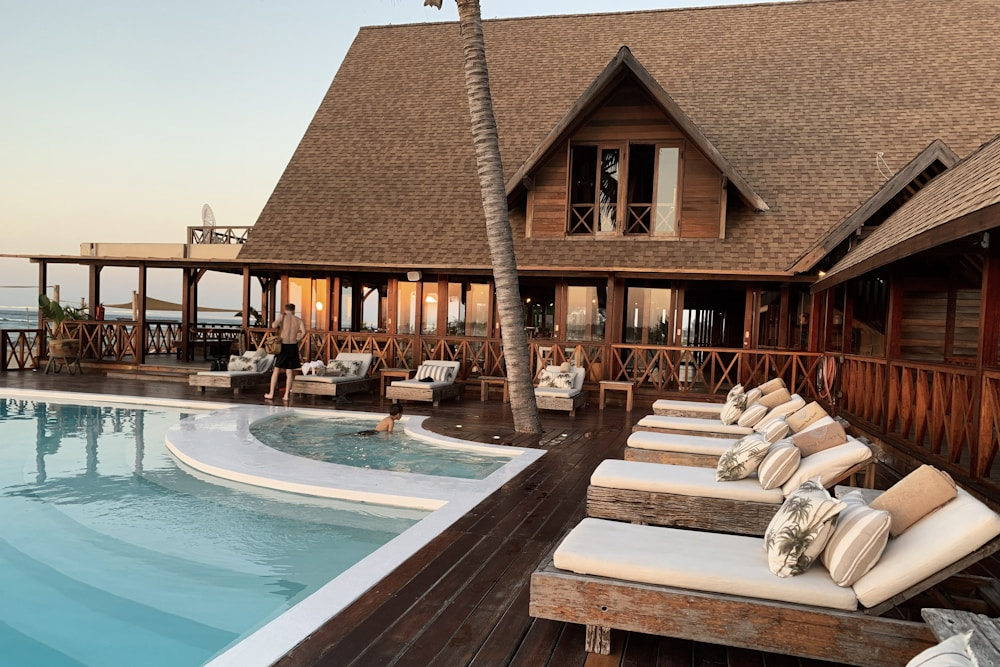

Những chuyến đi.
Rất riêng bạn.
Nhập điểm đến, ngày đi và ngân sách.
TravelMate tìm địa điểm, xem thời tiết và xếp lịch từng ngày cho bạn.
Thế giới vẫn chờ.
Một kế hoạch.
Đủ để lên đường.
Lịch trình từng ngày
Điểm tham quan và bữa ăn được xếp theo giờ, có tính thời tiết: hạn chế hoạt động ngoài trời vào ngày dự báo mưa.
Tạo chuyến đi → 💰Chi phí so với ngân sách
Ước tính vé tham quan, lưu trú, ăn uống, đi lại theo giá tham khảo có ghi nguồn, và cho biết ngân sách đủ hay thiếu.
Tính thử → 📍Địa điểm có thật
Điểm tham quan, quán ăn, khách sạn lấy từ dữ liệu bản đồ mở, kèm vị trí, giờ mở cửa và giá vé khi có.
Tìm địa điểm → 💬Trợ lý AI tiếng Việt
Hỏi tìm quán, giá vé, thời tiết, hoặc tính thử “nếu ở khách sạn 500k/đêm thì sao”. Mỗi câu được chuyển cho đúng chuyên gia.
Hỏi trợ lý →Bắt đầu từ
một cái tên.
Hà Nội
Phố cổ, hồ Gươm, ẩm thực đường phố
MIỀN BẮCSa Pa
Núi cao, ruộng bậc thang, bản làng
MIỀN TRUNGHuế
Kinh thành, lăng tẩm, món Huế
MIỀN TRUNGĐà Nẵng
Biển Mỹ Khê, Bà Nà, Ngũ Hành Sơn
MIỀN TRUNGHội An
Phố cổ, đèn lồng, làng nghề
TÂY NGUYÊNĐà Lạt
Đồi thông, hồ nước, khí hậu mát
MIỀN TRUNGNha Trang
Vịnh biển, đảo, hải sản
MIỀN NAMPhú Quốc
Đảo ngọc, bãi cát, hoàng hôn
Ít tab hơn.
Nhiều trải nghiệm hơn.
Không cần mở mười trang để so giờ mở cửa, giá vé và dự báo thời tiết. Mọi thứ nằm trong một lịch trình bạn có thể sửa bất cứ lúc nào.

Hỏi một câu.
Có ngay gợi ý.
Trợ lý hiểu tiếng Việt tự nhiên và có thể làm nhiều việc trong một câu hỏi.
Sẵn sàng cho chuyến đi tiếp theo?
Tạo tài khoản để lưu lịch trình, chỉnh sửa và giữ lại những nơi bạn thích.